hypothèse : relation entre les secteurs géographiques / les résidences et les types d’appartements (du studio au plus de 5 pièces)
Deux distributions connues par classe quelque soit la nature des modalités.
Tableau de contingence
calcul du khi2
comparaison avec le khi2 théorique
Afin de vraiment comprendre, on saisit des modalités différentes : à votre avis comment va-t-on les classer ?
Attention, valeur plancher 5
## Linking to GEOS 3.9.1, GDAL 3.3.2, PROJ 7.2.1; sf_use_s2() is TRUE## Reading layer `quartiersBailleurs' from data source
## `C:\Users\tachasa\01_stat\data\logement.gpkg' using driver `GPKG'
## Simple feature collection with 8 features and 1 field
## Geometry type: MULTIPOLYGON
## Dimension: XY
## Bounding box: xmin: 661091 ymin: 6865344 xmax: 663345.5 ymax: 6869044
## Projected CRS: RGF93 / Lambert-93## Reading layer `RPLS' from data source
## `C:\Users\tachasa\01_stat\data\logement.gpkg' using driver `GPKG'
## Simple feature collection with 9390 features and 72 fields
## Geometry type: POINT
## Dimension: XY
## Bounding box: xmin: 661284.6 ymin: 6865691 xmax: 663295 ymax: 6868803
## Projected CRS: RGF93 / Lambert-93##
## 1 2 3 4 5 6 7 9 <NA>
## 631 2164 3676 2231 609 45 33 1 0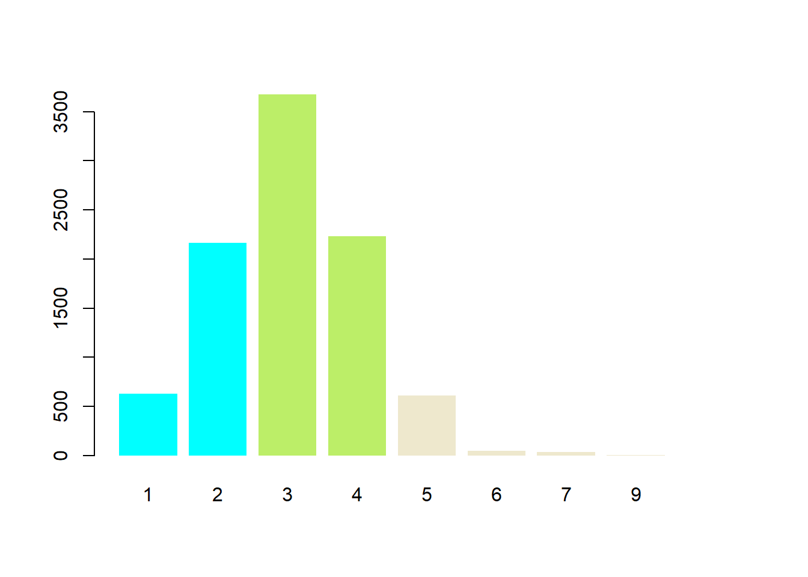
## Warning: attribute variables are assumed to be spatially constant throughout all
## geometries
## Warning: attribute variables are assumed to be spatially constant throughout all
## geometries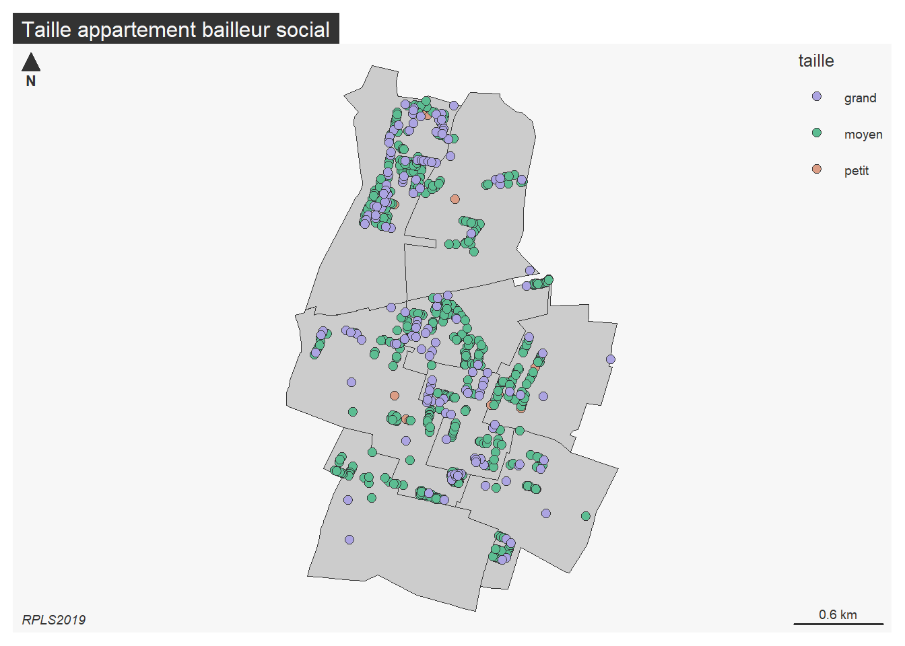
Quel est le problème de cette cartographie ?
zone <- st_read("data/logement.gpkg", "quartiersBailleurs")## Reading layer `quartiersBailleurs' from data source
## `C:\Users\tachasa\01_stat\data\logement.gpkg' using driver `GPKG'
## Simple feature collection with 8 features and 1 field
## Geometry type: MULTIPOLYGON
## Dimension: XY
## Bounding box: xmin: 661091 ymin: 6865344 xmax: 663345.5 ymax: 6869044
## Projected CRS: RGF93 / Lambert-93mf_map(zone, type = "typo", var = "NOM_IRIS")
mf_layout("Zones inventaire bailleurs sociaux", credits = "sources internes, Bondy, 2013")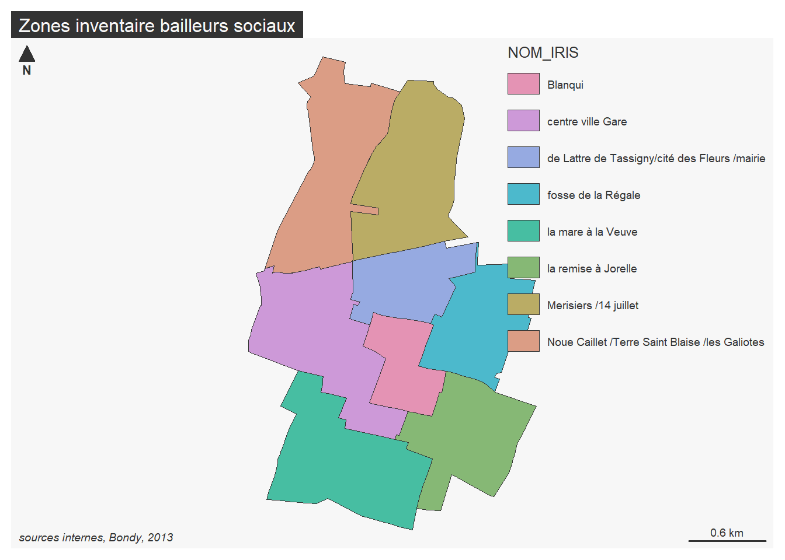
Au sens anglais du terme, ce qui peut exister
Utiliser l’outil de table dynamique (dans le menu données) pour le créer
Résultat attendu :
data <- read.csv("data/rplsPieceZone.csv", fileEncoding = "UTF-8")
tab <- table(data$NOM_IRIS, data$taille)
knitr::kable(addmargins(tab))| grand | moyen | petit | Sum | |
|---|---|---|---|---|
| Blanqui | 168 | 889 | 324 | 1381 |
| centre ville Gare | 84 | 778 | 404 | 1266 |
| de Lattre de Tassigny/cité des Fleurs /mairie | 65 | 869 | 482 | 1416 |
| fosse de la Régale | 33 | 483 | 299 | 815 |
| la mare à la Veuve | 2 | 307 | 179 | 488 |
| la remise à Jorelle | 59 | 521 | 86 | 666 |
| Merisiers /14 juillet | 17 | 611 | 223 | 851 |
| Noue Caillet /Terre Saint Blaise /les Galiotes | 254 | 1439 | 798 | 2491 |
| Sum | 682 | 5897 | 2795 | 9374 |
Il faut présenter les sources, la structure et le contenu du tableau.
Lister les questions susceptibles d’être posées, notamment en étudiant les fréquences conditionnelles
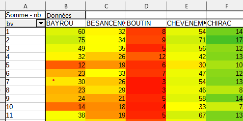 Cet outil est-il utile ici ?
Pour pouvoir comparer les zones, chaque groupe est ramené à une même base égale à 100.
freqLg <- round(prop.table(table(data$NOM_IRIS, data$taille), margin = 1)*100,0)
knitr::kable(freqLg, title = "Fréquence conditionnelle ligne")| grand | moyen | petit | |
|---|---|---|---|
| Blanqui | 12 | 64 | 23 |
| centre ville Gare | 7 | 61 | 32 |
| de Lattre de Tassigny/cité des Fleurs /mairie | 5 | 61 | 34 |
| fosse de la Régale | 4 | 59 | 37 |
| la mare à la Veuve | 0 | 63 | 37 |
| la remise à Jorelle | 9 | 78 | 13 |
| Merisiers /14 juillet | 2 | 72 | 26 |
| Noue Caillet /Terre Saint Blaise /les Galiotes | 10 | 58 | 32 |
savoir-faire tableur
Objectif : saisir une seule cellule et étendre la formule. quelle élément fixer, ligne ou colonne ?
utilisation du %
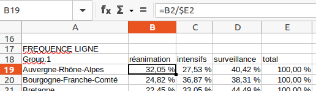
analyse
répartition des types d’appartement puis lorsque ramené à une base 100, on peut comparer entre les zones.
les écarts à la moyenne par type d’appartements sont plus parlants
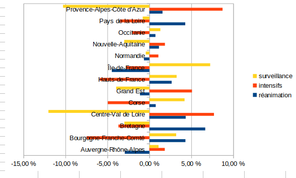
Qu’apporterait une étude des fréquences conditionnelles en colonnes ?
Il n’y a pas de variable population dans les données donc pas d’hypothèse autour de la population.
Il manque des exemples précis.
La bonne réponse était qu’il n’est pas nécessaire de l’étudier. En effet, la répartition des lits de réanimation entre les différentes régions ne fait que réfléter l’effectif de la population de chaque région. Or, nous n’avons pas cette variable dans le tableau.
Le dé est-il truqué ?
face <- seq(1,6)
effectif <- c(15,7,4,11, 6, 17)
total <- sum(effectif)
knitr::kable(data.frame(face,effectif))| face | effectif |
|---|---|
| 1 | 15 |
| 2 | 7 |
| 3 | 4 |
| 4 | 11 |
| 5 | 6 |
| 6 | 17 |
Le nombre total de lancers est de 60.
hypothèse H0 : le dé n’est pas truqué (il y a indépendance entre la face et le nombre de fois où elle sort)
Sur le total des lancers (60), chaque face aurait pû sortir 10 fois.
effectifThéorique <- rep (10,6)
df <- data.frame(face, effectif, effectifThéorique)
knitr::kable(df)| face | effectif | effectifThéorique |
|---|---|---|
| 1 | 15 | 10 |
| 2 | 7 | 10 |
| 3 | 4 | 10 |
| 4 | 11 | 10 |
| 5 | 6 | 10 |
| 6 | 17 | 10 |
distance entre effectifs théoriques et observés
Elle se mesure avec le khi2
On calcule l’écart, puis le carré de cet écart et on pondère par l’effectif théorique.
(ecart <- df$effectif - df$effectifThéorique)## [1] 5 -3 -6 1 -4 7(distance <- ecart^2)## [1] 25 9 36 1 16 49(relatif <- distance / df$effectifThéorique)## [1] 2.5 0.9 3.6 0.1 1.6 4.9(khi2 <- sum(relatif))## [1] 13.6C’est le nombre de valeurs possibles -1 (car on peut déterminer la 6e valeur à partir des 5 autres)
Lecture dans la table du khi2
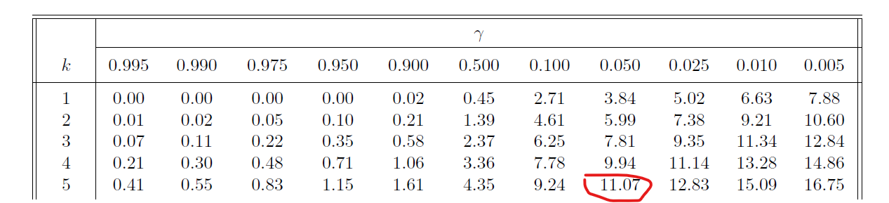 le khi2 théorique est de 11,7, il est donc inférieur au khi2 observé.
Quand le khi2 théorique est inférieur, le test est rejeté.
Le test est rejeté avec un risque de 5 %
Donc, le dé est truqué.
Le type d’appartement est indépendant quartier.
La première case reçoit la formule :
C’est ce qu’on appelle également le produit des marges
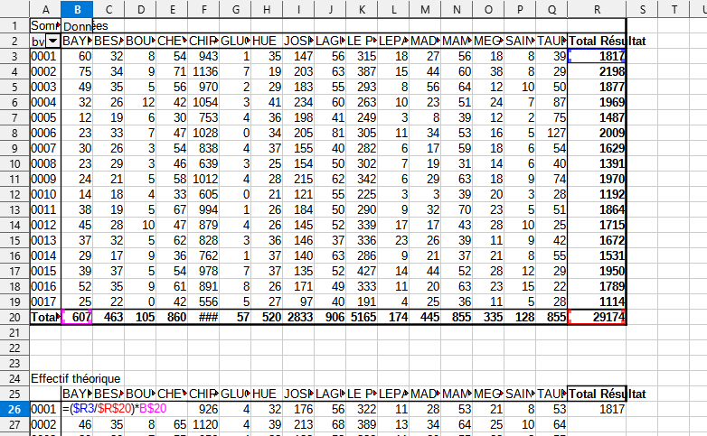
Que signifie une valeur zéro ?
Utiliser la notion
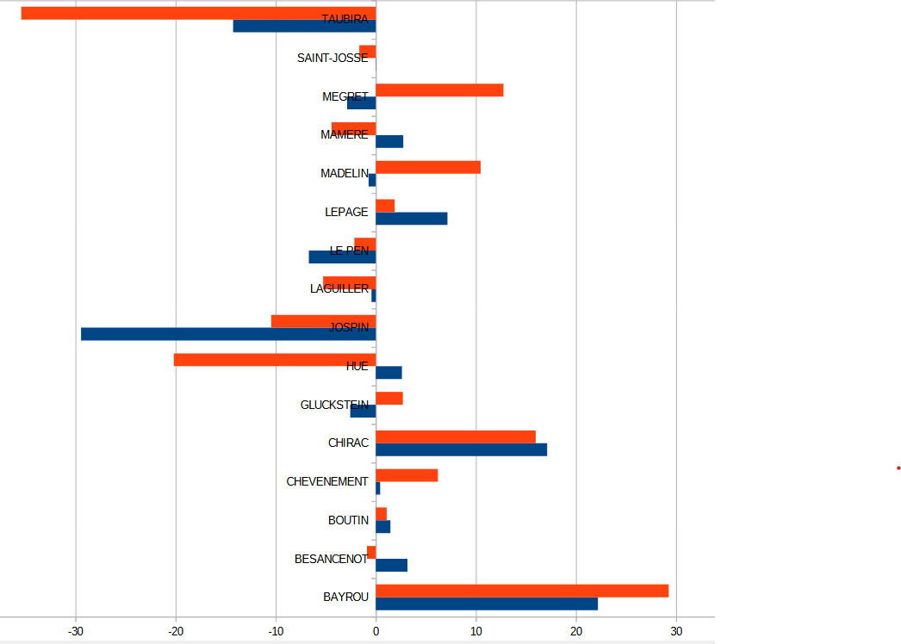
Les petits appartements sont sous-représentés à Blanqui et à la remise à Jorelle par rapport à une distribution identique entre les quartiers.
Le khi2 va permettre de valider le rejet de l’hypothèse d’indépendance.
rappel : métrique euclidienne plutôt que les valeurs absolues on utilise les carrés
On met les écarts rapportés à la valeur théorique d’indépendance au carré. Puis on divise par l’effectif théorique.
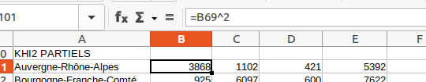
Le total de tous les khi2 partiels
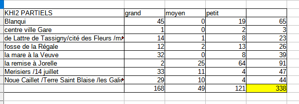
data <- read.csv("data/rplsPieceZone.csv")
tab <- table(data$NOM_IRIS, data$taille)
chisq.test(tab)##
## Pearson's Chi-squared test
##
## data: tab
## X-squared = 337.97, df = 14, p-value < 2.2e-16C’est le total des khi2 partiels (dans notre exemple 338)
On définit :
8 zone et 3 types d’appartements = 7 * 2 = 14
Sur internet, dans n’importe quelle table, on cherche les valeurs correspondantes.
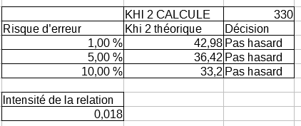
HO hypothèse d’indépendance. son rejet implique qu’il y a une relation.
Les variables nombre de pièces et zones ont une relation avec une marge d’erreur très faible puisque le khi2 augmente avec le risque d’erreur.
L5GEABIM Analyses bivariées et multivariées